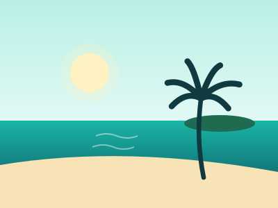
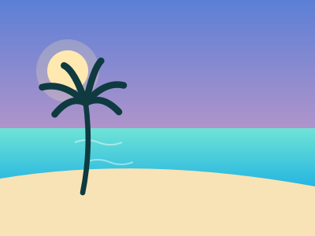
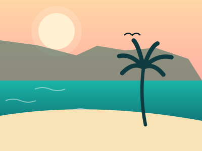
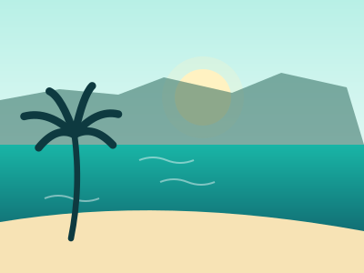
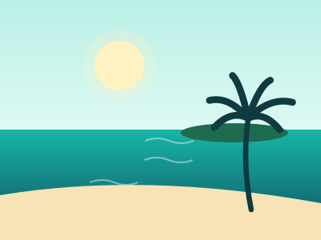
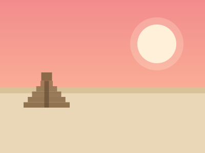

The best time to visit Mexico's beaches, month by month
Which Mexican coast is at its best in each month, with weather, sea temperature, rain, hurricane season and sargassum explained.
Pick the month you can travel. We rank 38 beaches, islands and paradise towns by heat, rain, sea temperature, storm season and sargassum, and tell you why.
Ranked for November.
Live temperatures from Open-Meteo. Peso rate: 25 Nov 2026.

A small island with shallow, glassy water and a slow golf-cart pace.

The lagoon of seven colours: freshwater that looks like the Caribbean.
A car-free island of sand streets, flamingos and whale sharks.
A real seaside city with sea lions, whale sharks and Balandra's shallows.

Nine bays of calm water, a national park and coffee in the hills.

A colourful surf town with a big personality.

Mexico's largest Caribbean island and one of the world's great drift dives.

A colonial town ringed by cenotes and the closest base to Chichén Itzá.
Answer a few questions about where, when and how you travel. A vetted Mexico travel specialist sends you a personalised shortlist of stays, timings and ideas. Free, and you're never obliged to book.


Which Mexican coast is at its best in each month, with weather, sea temperature, rain, hurricane season and sargassum explained.
What the seaweed is, which Caribbean beaches get it, the months it peaks, and the seaweed-free alternatives.
Passports, the FMM tourist permit, customs, travelling with children and Quintana Roo's Visitax, step by step.
Water, sunsets, seasons, flights, prices and vibe compared, so you can pick the right side of Mexico.
Types of cenotes, where the best ones are, entry fees, etiquette and safety in the Yucatán Peninsula's sinkholes.
No paid rankings, ever. Supporters fund the research, the monthly photo contest prizes and local writers across Mexico.
Compare beaches by season, guest flights and legal requirements, then get free planning help.
Weddings and honeymoonsResidency basics, buying in the coastal zone and real monthly costs, plus help from vetted locals.
Live in MexicoReach travellers at the moment they choose where to go, with clearly labelled sponsorships.
Advertise and partner